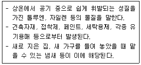
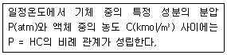
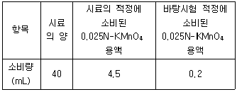
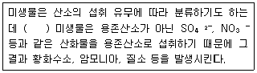
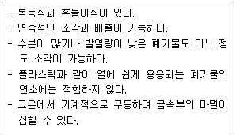

환경기능사 (2009-03-29 기출문제)
1과목: 대기오염방지
1. 다음 보기와 같은 특성을 가진 대기오염 물질은?

- H2S
- NH3
- NOx
- VOCs
(정답률: 63%)

2. 대기오염으로 인한 지구환경 변화 중 도시지역의 공장, 자동차 증에서 배출되는 고온의 가스와 냉난방시설로부터 배출되는 더운 공기가 상승하면서 주변의 찬 공기가 도시로 유입되어 도시지역의 대기오염물질에 의한 거대한 지붕을 만드는 현상은?
- 라니냐 현상
- 열섬 현상
- 엘니뇨 현상
- 오존층 파괴 현상
(정답률: 86%)
3. 다음 중 압력손실이 가장 큰 집진장치는?
- 중력집진장치
- 전기집진장치
- 원심력집진장치
- 벤츄리스크러버
(정답률: 79%)
4. 다음 보기에서 설명하는 기체에 관한 법칙은?

- 보일의 법칙
- 새를의 법칙
- 헨리의 법칙
- 보일 - 샤를의 법칙
(정답률: 80%)
5. 가스 중의 유해물질 또는 회수가치가 있는 가스를 흡착법으로 이용하고자 할 때, 다음 중 흡착제로 사용할 수 없는 것은?
- 활성탄
- 알루미나
- 실리카켈
- 석영
(정답률: 56%)
6. 황성분 1%인 중유를 20ton/hr로 연소시킬 때 배출되는 SO2를 석고(CaSO4)로 회수하고자 할 때 회수하는 석고의 양은? (단, 24시간 연속가동하며, 연소율 : 100%. 탈황율: 90%, 원자량 S:32, Ca:40)
- 5.83 kg/min
- 6.42 kg/min
- 12.75 kg/min
- 14.17 kg/min
(정답률: 47%)
7. 사이클론 스크러버에 관한 다음 설명 중 틀린 것은?
- 용해성이 좋은 가스에 효과적이다.
- 사이클론의 직경을 크게 하면 효율이 증가한다.
- 대용량 가스처리가 가능하다.
- 비교적 구조가 간단하다.
(정답률: 68%)
8. 다음 중 폐에서 헤모글로빈과 결합하여 카르복시헤모글로빈을 형성하는 물질은?
- 암모니아
- 황화수소
- 과산화수소
- 일산화탄소
(정답률: 69%)
9. 유해가스 측정을 위한 시료 재취 방법을 틀린 것은?
- 시료 재취관은 배출가스 등에 의해 부식되지 않는 재질의 관을 사용한다.
- 시료 재취관은 굴뚝 벽에 최대한 닿도록 끼워 넣는다.
- 가스 중에 먼지가 혼입되는 것을 방지하기 위하여 시료 재취관에 여과재를 넣어 둔다.
- 시료채취 위치는 가스의 유속이 현저하게 변화하지 않고 수분이 적은 곳으로 한다.
(정답률: 69%)
10. A중유 연소 가열로의 연소 배출가스를 분석 하였더니 용량비로써 질소: 80%, 탄산가스: 12%, 산소: 8%의 결과치를 얻었다. 이 때 공기비는?
- 약 1.6
- 약 1.4
- 약 1.2
- 약 1.1
(정답률: 21%)
11. 탄소 6kg을 완전 연소하기 위해 필요한 이론공기량은? (단, 표준상태 기준)
- 11.2 Sm3
- 22.4 Sm3
- 53.3 Sm3
- 106.7Sm3
(정답률: 36%)
12. 액체 프로판(C3H8) 100kg을 기화시켰을 때 표준상태에서 부피는?
- 44.0 Sm3
- 47.3 Sm3
- 50.9 Sm3
- 53.7 Sm3
(정답률: 40%)
13. 자동차 배기구에서 배출되는 유해성분으로 가장 거리가 먼 것은?
- NOx
- CO
- HC
- O3
(정답률: 68%)
14. 다음 여과집진장치의 탈진방법으로 가장 거리가 먼 것은?
- 진동형
- 세정형
- 역기류형
- pulse jet형
(정답률: 60%)
15. 충전탑(packed tower)에서 충전물의 구비조건으로 틀린 것은?
- 단위용적에 대한 표면적이 커야 한다.
- 공극률이 크며, 압력손실이 작아야 한다.
- 액의 홀드업(hold up)이 커야 한다.
- 마찰저항이 작아야 한다
(정답률: 54%)
2과목: 폐수처리
16. 지구상의 담수 중 가장 큰 비율을 차지하고 있는 것은?
- 호수
- 하천
- 빙설 및 빙하
- 지하수
(정답률: 88%)
17. 일반적인 폐수처리공정에서 최적 응집제 투입량을 결정하기 위한 쟈-테스트(jar test)에관한 설명으로 가장 적합한 것은?
- 응집제 투입량 대 상징수의 SS 잔류량을 측정하여 퇴적 응집제 투입량을 결정
- 응집제 투입량 대 상징수의 알카리도를 측정하여 최적 응집제 투입량을 결정
- 응집제 투입량 대 상징수의 용존산소를 측정하여 최적 응집제 투입량을 결정
- 응집제 투입량 대 상징수의 대장균균수를 측정하여 최적 응집제 투입량을 결정
(정답률: 80%)
18. Jar-test를 실시한 결과 pH7.3에서 500mL의 폐수에 0.2% Al2(SO4)3· 18H2O(밀도=1.0g/cm3)용액 20mL를 넣었을 경우 가장 효과가 좋았다면 이 폐수 100m3/day를 처리하기 위해서 소용되는 적정 응집제 투입량(kg/day)은?
- 8
- 10
- 12
- 14
(정답률: 23%)
19. 다음 중 산화에 해당하는 것은?
- 수소와 화합
- 산소를 잃음
- 전자를 얻음
- 산화수 증가
(정답률: 69%)
20. 도시 폐수처리 계통도의 처리 순서가 가장 적합하게 나열된 것은?
- 유입수 → 침사지 → 1차침전지 → 포기조 → 최종침전지 → 염소소독조 → 유출수
- 유입수 → 염소소독조 → 침사지 → 1차침전지 → 포기조 → 최종침전지 → 유출수
- 유입수 → 침사지 → 1차침전지 → 최종침전지 → 염소소독조 → 포기조 → 유출수
- 유입수 → 1차침전지 → 침사지 → 포기조 → 최종침전지 → 염소소독조 → 유출수
(정답률: 68%)
21. A폐수를 활성탄을 이용하여 흡착법으로 처리하고자한다. 폐수 내 오염물질의 농도를 30mg/L에서 10mg/L로 줄이는데 필요한 활성탄의 양은? (단, X=M+KC1/n 사용, K=0.5, n=1)
- 3.0 mg/L
- 3.3 mg/L
- 4.0 mg/L
- 4.6 mg/L
(정답률: 43%)
22. 다음 중 6가크롬(Cr⁺⁶)함유 폐수를 처리하기 위한 가장 적합한방법은?
- 아말감법
- 환원침전법
- 오존산화법
- 충격법
(정답률: 80%)
23. 농도를 알 수 없는 염산 50mL를 완전히 중화시키는데 0.4N 수산화나트륨 25mL가 소모 되었다. 이 염산의 농도는?
- 0.2N
- 0.4N
- 0.6N
- 0.8N
(정답률: 47%)
24. 지하수 수질 특성으로 가장 거리가 먼 것은?
- 유속이 느린 편이다.
- 국지적인 환경조건의 영향을 받지 않는다.
- 세균의 의한 유기물분해가 주된 생물작용이다.
- 연중 수온이 거의 일정하다.
(정답률: 75%)
25. A폐수의 산성 100℃에서 과망간산칼륨에 의한 화학적 산소 요구량 측정 실험의 결과가 다음과 같을 때 COD 값은 얼마인가? (단, 0.025N-KMnO4 역가는 1.001이다.)

- 21.5 mg/L
- 50.5 mg/L
- 107.6 mg/L
- 200.2 mg/L
(정답률: 26%)
26. 폐수처리에 이용되는 미생물의 구분 중 다음 ( ) 안에 가장 적합한 것은?

- 자산성
- 호기성
- 혐기성
- 통기성
(정답률: 74%)
27. 다음 중 해양오염 현상으로 거리가 먼 것은?
- 적조
- 부영양화
- 용존산소과포화
- 온열배수유입
(정답률: 64%)
28. 물 속에서 침강하고 있는 입자에 스토크스(Stokes)의 법칙이 적용된다면 입자의 침강속도에 가장 큰 영향을 주는 변화 인자는?
- 입자의밀도
- 물의밀도
- 물의 점도
- 입자의 직경
(정답률: 74%)
29. 무기성 부유물질, 자갈, 모래, 뼈 등 토사류를 제거하여 기계장치 및 배관의 손상이나 막힘을 방지하는 시설로 가장 적합한 것은?
- 침전지
- 침사지
- 조정조
- 부상조
(정답률: 70%)
30. 물 분자가 극성을 가지는 이유로 가장 적합한 것은?
- 산소와 수소의 원자량의 차
- 산소와 수소의 전기음성도의 차
- 산소와 수소의 끓는점의 차
- 산소와 수소의 온도 변화에 따른 밀도의 차
(정답률: 74%)
31. 폐수를 화학적으로 산화 처리할 때 사용되는 오존처리에 대한 설명으로 옳은 것은?
- 생물학적 분해불가능 유기물 처리에도 적용할 수 있다.
- 2차 오염물질인 트리할로메탄을 생성한다.
- 별도 장치가 필요 없어 유지비가 적다.
- 색과 냄새 유발성분은 제거할 수 없다.
(정답률: 55%)
32. 다음 중 수중의 알칼리도를 ppm 단위로 나타낼 때 기준이 되는 물질은?
- Ca(OH)2
- CH3OH
- CaCO3
- HCl
(정답률: 66%)
33. 혐기성조/호기성조의 과정을 거치면서 질소 제거는 고려되지 않지만 하 · 폐수 내의 유기물 산화와 생물학적으로 인(P)을 제거하는 공법으로 적합한 것은?
- A/O 공법
- A2/O 공법
- S/L 공법
- 4단계 Bardenpho 공법
(정답률: 77%)
34. 박테리아의 경험식은 C5H7O2N 이다. 이 3kg의 박테리아를 완전히 산화시키려면 몇 kg의 산소가 필요한가? ( 단, 질소는 모두 암모니아로 무기화 된다.)
- 4.25
- 3.47
- 2.14
- 1.42
(정답률: 26%)
35. 여과지 운전중에 발생하는 주요 문제점과 거리가 먼 것은?
- 진흙 덩어리의 축적
- 모래층에 공기 기포를 생성
- 여재층의 수축
- 슬러지벌킹 발생
(정답률: 69%)
3과목: 폐기물처리
36. 다음 보기에서 설명하는 소각로 형식은?

- 다단로
- 회전로
- 유동상 소각로
- 화격자 소각로
(정답률: 56%)
37. 폐기물의 안정화에 관한 설명으로 거리가 먼 것은?
- 폐기물의 물리적 성질을 변화시켜 취급하기 쉬운 물질을 만든다.
- 오염물질의 손실과 전달이 발생할 수 있는 표면적을 감소 시킨다.
- 폐기물내 오염물질의 용존성 및 용해성을 증가시킨다.
- 오염물질의 독성을 감소시킨다.
(정답률: 60%)
38. 폐기물 고체연료(RDF)의 구비조건으로 틀린 것은?
- 함수율이 높을 것
- 열량이 높을 것
- 대기 오염이 적을 것
- 성분 배합률이 균일할 것
(정답률: 73%)
39. 밀도 0.9톤/m3,부피 1,000m3의 쓰레기를 적재유효용량이 13톤인 차량으로 이 쓰레기를 동시에 운반하고자 한다면 몇 대의 차량이 필요한가?
- 68대
- 70대
- 72대
- 75대
(정답률: 48%)
40. 함수율이 97%인 슬러지 3850m3를 농축하여 함수율 94%로 낮추었을 때 슬러지의 부피는? (단, 슬러지 비중은 1.0이다.)
- 1800m3
- 1925m3
- 2200m3
- 2400m3
(정답률: 42%)
41. 슬러지 농축의 장점으로 가장 거리가 먼 것은?
- 후속 처리시설인 소화조의 부피를 감소시킬 수 있다.
- 슬러지 탈수시설의 규모가 작아지므로 슬러지 처리비용이 절감된다.
- 슬러지 개량에 소요되는 약품의 종류를 줄일 수 있다.
- 슬러지의 부피가 감소되므로 슬러지 수송의 경우 수송관과 펌프의 용량이 작아도 가능하다.
(정답률: 50%)
42. 다음 중 적환장 설치할 필요성이 가장 낮은 경우는?
- 공기수송 방식을 사용하는 경우
- 폐기물 수집에 대형 컨테이너를 많이 사용하는 경우
- 처분장이 원거리에 있어 도중에 불법 투기의 가능성이 있는 경우
- 차분장이 멀리 떨어져 있어 소형 차량에 의한 수송이 비경제적일 경우
(정답률: 66%)
43. 슬러지의 탈수 방법으로 가장 거리가 먼 것은?
- belt press
- screw ion press
- filter press
- vacuum filtration
(정답률: 45%)
44. 폐기물 파쇄에 관한 다음 설명 중 가장 거리가 먼 것은?
- 전단식 파쇄기는 고정칼이나 왕복칼 또는 회전칼을 이용하여 폐기물을 절단한다.
- 충격식 파쇄기는 대량 처리가 가능하다.
- 충격식 파쇄기는 연성이 있는 물질에는 부적합한 편이다.
- 전단식 파쇄기는 유리나 목질류 등을 파쇄하는데 이용되며, 해머밀은 대표적인 전단식 파쇄기에 해당한다.
(정답률: 53%)
45. 일반적인 메탄가스의 성질로 가장 적합한 것은?
- 무색, 악취, 가연성
- 무색, 무취, 가연성
- 황색, 악취, 불연성
- 황색, 무취, 불연성
(정답률: 63%)
46. 폐기물의 자원화와 가장 관계가 먼 것은?
- RDF
- Pyrolysis
- Land Fill
- Composting
(정답률: 45%)
47. 유기물을 완전연소시키기 위한 폐기물의 연소성능 필요 조건 항목(3T)으로 가장 거리가 먼 것은?
- 온도
- 기압
- 체류시간
- 혼합
(정답률: 68%)
48. 쓰레기 수거시 수거 작업간의 노동력을 비교하기 위하여 사용하는 MHT를 가장 옳게 설명한 것은?
- 작업자 1인이 쓰레기 1톤을 수거하는데 소요되는 총시간
- 쓰레기 1톤을 1시간 동안 수거하는게 필요한 작업자 수
- 작업자 1인이 1시간 동안 수거할 수 있는 쓰레기 총량
- 쓰레기 1톤을 1시간 동안 수거할 때 총 수거효율
(정답률: 63%)
49. 폐기물 매립지 입지 선정시 적격 기준항목으로 거리가 먼 것은?
- 토지 : 주민 밀집 지역인 곳
- 토양: 주변 토양 복토재 사용 가능성 있는 곳
- 지형 및 지질 : 경제성 있는 매립용량 확보 가능한 곳
- 수문 : 강우배제 침출수 발생 제어가 용이 한 곳
(정답률: 64%)
50. 발열량이 800kcal/kg인 폐기물을 하루에 6톤씩 소각한다. 소각로 연소실의 용적이 125m3이고, 1일 운전시간이 8시간 이면 연소실의 열 발생률은?
- 3,600 kcal/m3·hr
- 4,000 kcal/m3·hr
- 4,400 kcal/m3·hr
- 4,800 kcal/m3·hr
(정답률: 43%)
51. 폐기물 오염을 측정하기 위한 시료의 축소 방법으로 거리가 먼 것은?
- 구획법
- 교호삽법
- 사등분법
- 원추사분법
(정답률: 67%)
52. 퇴비화가 진행되었을 때 나타나는 특징으로 거리가 먼 것은?
- 병원균이 사멸되어 가의 없다.
- 수분 보유능력과 양이온 교환능역이 낮아진다.
- C/N 비가 10~20 정도로 낮아진다.
- 악취가 거의 없고 안정화된다.
(정답률: 26%)
53. 통상적으로 소각로의 설계기준이 되는 진발열량을 의미하는 것은?
- 고위발열량
- 저위발열량
- 고위발열량과 저위발열량의 기하평균
- 고위발열량과 저위발열량의 산술평균
(정답률: 65%)
54. 지하수 상 ·하루 두 지점의 수두차가 4m, 두 지점 사이의 수평거리가 500m, 투수계수가 20m/일 이면, 투수단면적 200m2의 지하수 유입량은? (단, Q = KA△h/△L이다.)
- 5m3/일
- 10m3/일
- 16m3/일
- 32m3/일
(정답률: 24%)
55. 수분함량이 25%인 쓰레기를 건조시켜 수분함량이 5%인 쓰레기가 되도록 하려면 쓰레기 1톤당 증발시켜야 하는 수분량은 약 얼마인가? (단, 쓰레기 비중은 1.0으로 가정함)
- 40kg
- 129kg
- 175kg
- 210kg
(정답률: 40%)
4과목: 소음 진동학
56. 진동 감각에 대한 인간의 느낌을 설명한 것으로 옳지 않은 것은?
- 진동수 및 상대적인 변위에 따라 느낌이 다르다.
- 수직 진동은 주파수 4~8Hz에서 가장 민감하다.
- 수평 진동은 주파수 1~2Hz에서 가장 민감하다.
- 인간이 느끼는 진동가속도의 범위는 0.01~10Gal이다.
(정답률: 64%)
57. 다음 중 소음레벨에 관한 설명으로 가장 적합한 것은?
- 변동하는 소음의 에너지 평균값으로 어떤 시간대에서 변동하는 소음 에너지를 같은 시간 동안의 정상소음 에너지로 치환한 값이다.
- 소음에 의해 대화에서 방해되는 정도를 표현하기 위해 사용한다.
- 소음계의 주파수 보정 회로를 A에 놓고 측정하였을 때의 지시값을 말한다.
- 항공기에 의해 어느 지역에 장시간 동안 노출되는 소음을 평가하는 척도이다.
(정답률: 42%)
58. 주파수가 100Hz, 속도가 200m/s인 파동의 파장은?(오류 신고가 접수된 문제입니다. 반드시 정답과 해설을 확인하시기 바랍니다.)
- 0.2m
- 0.5m
- 2.0m
- 5.0m
(정답률: 23%)
59. 어느 벽체의 입사음의 세기가 10-2W/m2이고, 투과음의 세기가 10-4W/m2이었다. 이 벽체의 투과율과 투과손실은?
- 투과율=10-2, 투과손실=20dB
- 투과율=10-2, 투과손실=40dB
- 투과율=102, 투과손실=20dB
- 투과율=102, 투과손실=40dB
(정답률: 42%)
60. 1000Hz에서 정상적인 성인의 귀로 가청할 수 있는 최소 음압실효치는?
- 2×10-5N/m2
- 5×10-5N/m2
- 2×10-12N/m2
- 5×10-12N/m2
(정답률: 26%)